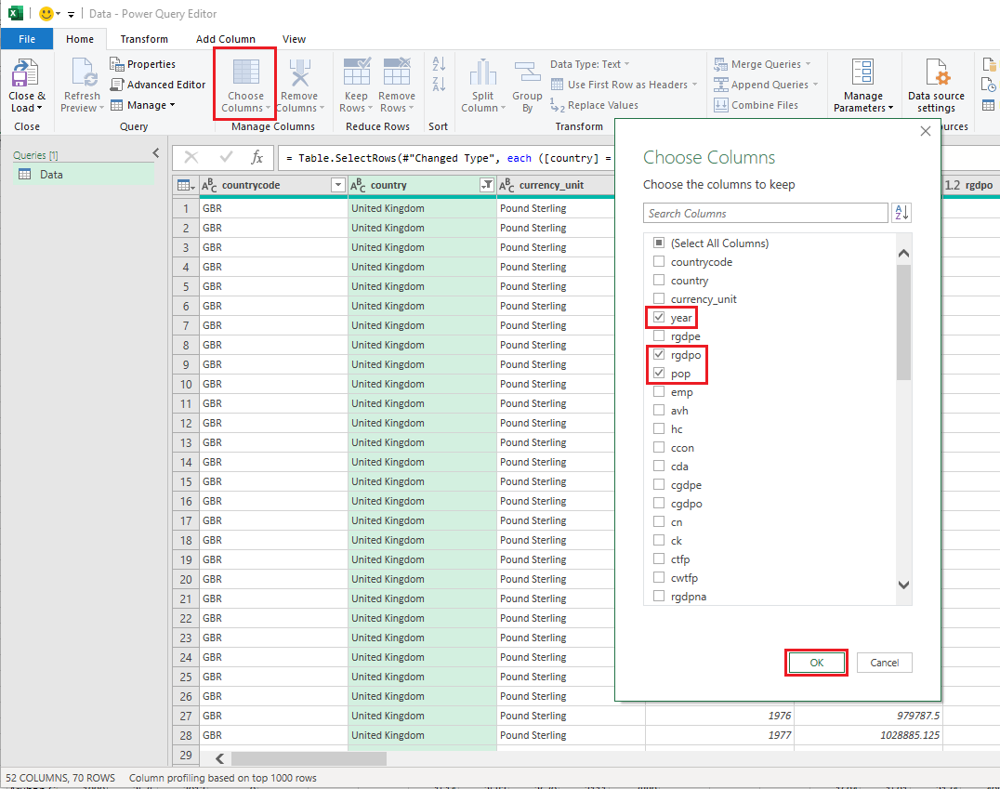
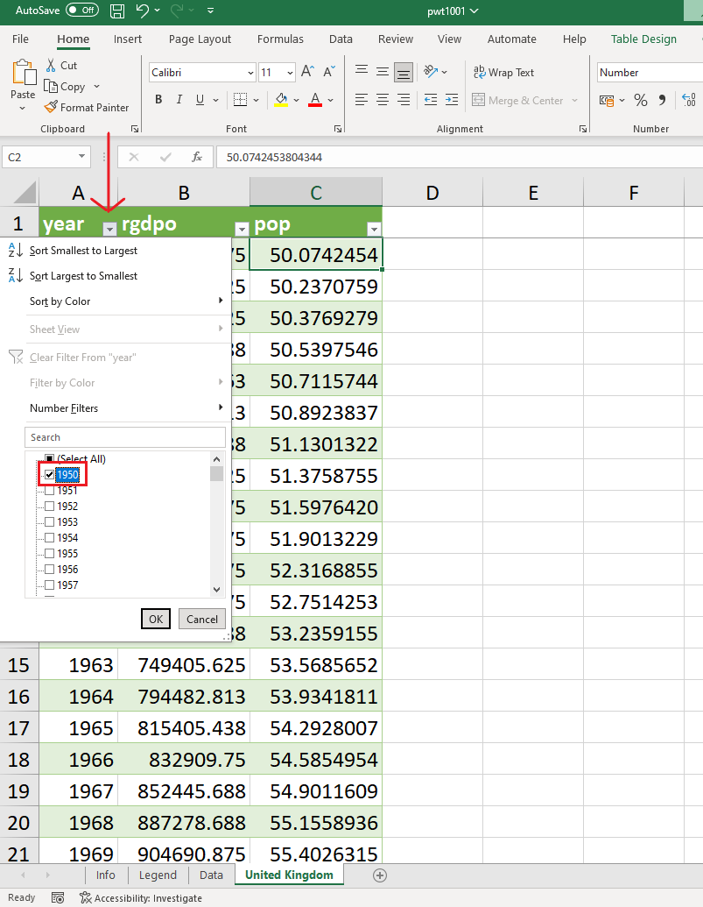

Chapter 1 Preparing the dataset
1.1 Extracting the relevant information
Assume we are only interested in working with the variables “year”, “rgdpo” and “pop” for the United Kingdom. It will be useful to create a new spreadsheet containing only the data needed for this analysis. We present two methods that can be employed to extract the relevant data from the main spreadsheet.
Method 1: Brute force method
- Click on the arrow next to “country” (Column B) and select the country of your choice (here the United Kingdom). Tip: first click on Select all to unselect all countries.
To select the rows containing UK data, click on the first row and on the last row in the range while pressing the shift key at the same time.
Create a new spreadsheet, rename it “United Kingdom” and paste the data. Delete all the columns that are not needed.
Go to Insert and click on Table. In the “Create Table” box, select “My table has headers” and click OK.
- The following table should appear.
Method 2: Smart method (more likely to avoid mistakes)
- Go to Data, and click on Get Data
- Select From File, then From Excel Workbook
- Select pwt1001 (in the folder where you saved it) and click on Import. In the Navigator box, select the Data spreadsheet and press Transform Data
- In the Data - Power Query Editor box, press the arrow next to country and select United Kingdom
- Press the arrow next to Choose Columns and select year, rgdpo and pop

- In the Properties on the right, write the name of the new spreadsheet (“United Kingdom”).
- Then click on Close & Load to create the new spreadsheet
- The new spreadsheet “United Kingdom” contains a table with three columns corresponding to “year”, “rgdpo” and “pop”
Practice exercise: create a new spreadsheet entitled “1970” containing the three entries “country”, “rgdpo” and “pop” for the year 1970.
1.2 Freezing panes
To freeze the top row, go to View, then Freeze pane and select Freeze Top Row.
The top row remains visible while scrolling through the rest of the worksheet. Similarly it is possible to freeze the first column.
1.3 Hiding rows or columns
- To show data for selected years only, for example the first and the last (1950 and 2019), click on the arrow next to year and select “1950” and “2019”, then click OK.

Only the first and last observations appear!
- To hide a column (or a row), right click on its letter (or number) header (eg “C”) and select hide. Select unhide to reverse this action.
1.4 Sorting observations
In the “1970” spreadsheet (See Practice exercise in Section 1.1), countries by default are listed in alphabetical order. To sort the countries from the wealthiest to the poorest in terms of GDP, click on the arrow next to “rgdpo” and select “Sort Largest to smallest” to rearrange the countries in descending values of GDP.